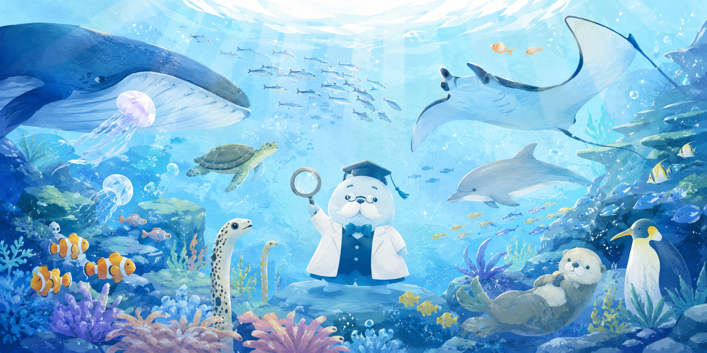

ぴ博士の海のいきもの図鑑へようこそ
このサイトは、海の生き物の魅力や面白さを多くの人に伝えることを目的として制作しています。 水族館などで見られる魚や海の生き物について、その特徴や生態を分かりやすく紹介し、 興味を持ってもらえる内容を目指しています。 また、おすすめの水族館や見どころも掲載し、 実際に足を運びたくなるような情報を発信しています。
📝 更新情報
- 2026年7月22日
-
今日のいきものを更新しました。
今週の豆知識を更新しました。 - 2026年7月15日
- 今週の豆知識を更新しました。
今日のいきもの
海の生き物を1種類ずつ取り上げ、 見た目の特徴や生態、面白いポイントを簡単に紹介します。
おすすめ水族館ガイド
実際に訪れた水族館について、 展示の特徴や人気の生き物、見どころなどを紹介します。
今週の豆知識
海の生き物に関する豆知識を紹介します。